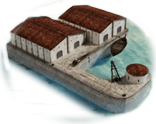
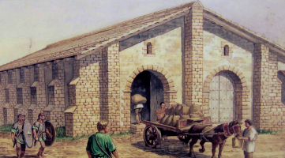
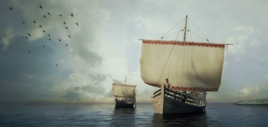

RTR: Imperium Surrectum
RTR: Imperium SurrectumGranary
4 levels, each replacing the one before it — you upgrade in place rather than building alongside.
Small Granary (Food trade) → Grain Export Silos (Food trade) → Huge Granary (Food trade) → Grain Export Port (Food trade)
Levels at a glance
| Level | Cost | Build time | Minimum settlement | Upgrades to | Excludes | |
|---|---|---|---|---|---|---|
| Small Granary (Food trade) | 1,500 | 2 | town | Grain Export Silos (Food trade) | Grain Imports (Food trade) | |
| Grain Export Silos (Food trade) | 3,000 | 4 | large town | Huge Granary (Food trade) | Grain Imports (Food trade) | |
| Huge Granary (Food trade) | 4,500 | 6 | city | Grain Export Port (Food trade) | Grain Imports (Food trade) | |
 | Grain Export Port (Food trade) | 6,000 | 8 | large city | — | Grain Imports (Food trade) |
Costs in denarii, build time in turns.
Small Granary (Food trade)

Roman life cannot flourish without access to its staple. Let it stand as a reminder: without grain, Rome would be but a collection of ruins.
Bread is the staff of life, but grain is the foundation of empires.
In the shadow of towering walls, the granary stands as a quiet yet critical guardian of the city's well-being. Here, golden grains are stored like treasure, for without this bounty, even the mightiest empire would fall to its knees. For each bushel carefully packed away, a day's peace is preserved, a citizen's hunger is sated, and a soldier’s strength is sustained. Let the poets praise the glory of our conquests and monuments, but the wise know it’s this granary that allows us to rise anew each day. Rome may have been built in a day, but it will not endure without the steady hand of those who store its precious wheat.
Wording varies by culture: 2 versions of this description exist in the game files.
| Cost | 1,500 denarii | Build time | 2 turns | Minimum settlement | town | Upgrades to | Grain Export Silos (Food trade) |
Requirements — all of these must hold before this level can be built.
- the region does not have the hidden resource
nobuild(nobuilding) - the region has the grain resource
- any faction
- Government Building
- Grain Imports (Food trade) is not built here and not
building_present grain_imports queued(not_grain_imports) - Level 1 of any cropfarming building
Show the condition as the game files write it
nobuilding and resource grain and factions { all, } and requires_gov and not_grain_imports and cropfarming_level_1
What it does
- +1 public order (happiness)
Excludes: building this rules out Grain Imports (Food trade). Choose deliberately — this is not reversible by demolition in every case.
Grain Export Silos (Food trade)

Large grain silos ensure the masses might be fed, at least for now.
Bigger is always better when it comes to storing grain, unless you like hungry mobs.
These larger silos can store a substantial amount of grain, enough to feed a small army or an entire city through a harsh winter. If the gods are kind and the harvest is good, your people will be well-fed. If not, well... the silos will empty fast. Better pray to Ceres.
As the urbs grows, more people flock to it. They bring their families, their dependents, their slaves: more mouths to feed and no food to keep them. The mob develops, becomes stronger as the proletarii increase. More grain is required. The merchants provide it, at their price, and as is their wont.
Then, sudden as a summer storm, the rumour breaks upon the city: there shall be a smaller harvest, a tiny one, or none at all. The panic spreads, the anger rises. Hunger weakens the bonds of moral behaviour. Discontent leads to violence and a subtle malevolence is directed at the best men: who are they to lead, they who do not truly know the primal fear of starvation.
Practical concerns ought to motivate them: true famine tends to spark disease. Swift and silent Morbus makes no distinction in rank. Nor indeed does Death, Mors himself, who will, through the rage of the suffering lowly, take the nobiles should they not act. Promagistrates are directed to find available grain, prestigious leaders begged to hound their clientes among the allied kings. Food is found: the crisis averted, at least, for the moment.
Surely there is a better way; surely, some surplus should be stored.
The res publica can afford subsidies, expenditure on public facilities, indeed, even to take control and organise all on a larger scale, ensuring the collection of an adequate supply in times of famine and a profit in the times of plenty. The res publica cannot afford to do nothing: chaos, conflict and destruction lie that way.
Wording varies by culture: 2 versions of this description exist in the game files.
| Cost | 3,000 denarii | Build time | 4 turns | Minimum settlement | large town | Upgrades to | Huge Granary (Food trade) |
Requirements — all of these must hold before this level can be built.
- the region does not have the hidden resource
nobuild(nobuilding) - the region has the grain resource
- any faction
- Government Building
- Grain Imports (Food trade) is not built here and not
building_present grain_imports queued(not_grain_imports) - Level 2 of any cropfarming building
Show the condition as the game files write it
nobuilding and resource grain and factions { all, } and requires_gov and not_grain_imports and cropfarming_level_2
What it does
- +1 trade income
- -1 population growth
- Adds 1 grain supply points to your faction. \nMax grain supply points allowed per faction = 16
Excludes: building this rules out Grain Imports (Food trade). Choose deliberately — this is not reversible by demolition in every case.
Huge Granary (Food trade)

Behind every empire and hungry army there is a well-stocked granary.
Behind every great empire lies a well-stocked horreum... and a very relieved logistics officer.
The pinnacle of Roman storage engineering, the horreum can keep grain fresher, longer, and in greater quantities. Empires rise on the back of a full stomach, and this horreum will ensure your legions march with strength, and your people don’t turn into rioting mobs.
Lament for the days when the ancient virtue of the Roman people still lingered. Wish for a return to the times when the hardy farmer laboured, content, and raised his own rich harvest. Grieve, for the era of sloth, largesse and corruption has fallen upon us, the inhabitants of a once great city.
Now the populace has no need to work for their food: the res publica must supply the money, organise the shipping and ensure the distribution of food for all. The tribunes run riot: each striving to outdo the others in offering more to the people. The most powerful seek the office of curator annonae. It may be a challenge to organise fleets on such a grand scale, though their military success shall stand them in good stead: however, the adulation incumbent upon success far outweighs considerations that one might fail.
That such a mundane thing as grain might cause such passion and create such power, truly is a marvel. For having entrusted the supply to one man, he alone shall reap the benefit.
Wording varies by culture: 2 versions of this description exist in the game files.
| Cost | 4,500 denarii | Build time | 6 turns | Minimum settlement | city | Upgrades to | Grain Export Port (Food trade) |
Requirements — all of these must hold before this level can be built.
- the region does not have the hidden resource
nobuild(nobuilding) - the region has the grain resource
- any faction
- Government Building
- Grain Imports (Food trade) is not built here and not
building_present grain_imports queued(not_grain_imports) - Level 3 of any cropfarming building
- Trading Port or River Port or above
Show the condition as the game files write it
nobuilding and resource grain and factions { all, } and requires_gov and not_grain_imports and cropfarming_level_3 and water_transport
What it does
- +2 trade income
- -2 population growth
- Adds 2 grain supply points to your faction. \nMax grain supply points allowed per faction = 16
Excludes: building this rules out Grain Imports (Food trade). Choose deliberately — this is not reversible by demolition in every case.
Grain Export Port (Food trade)

This region is exporting enormous amounts of grain, enough for a massive city or for several smaller ones.
The fields may be far, but their bounty feeds all.
In this well-cultivated region, the granaries are filled to the top with grain destined for every corner of the empire. With the sheer amount of produce bound for far destinations a dedicated grain port was needed to handle the many ships eagerly waiting for their golden coloured cargo.
Wording varies by culture: 2 versions of this description exist in the game files.
| Cost | 6,000 denarii | Build time | 8 turns | Minimum settlement | large city |
Requirements — all of these must hold before this level can be built.
- the region does not have the hidden resource
nobuild(nobuilding) - the region has the grain resource
- any faction
- Government Building
- Grain Imports (Food trade) is not built here and not
building_present grain_imports queued(not_grain_imports) - Level 4 of any cropfarming building
- Shipwright or above or Inland Trade Centre
Show the condition as the game files write it
nobuilding and resource grain and factions { all, } and requires_gov and not_grain_imports and cropfarming_level_4 and water_transport_2
What it does
- +3 trade income
- -3 population growth
- Adds 3 grain supply points to your faction. \nMax grain supply points allowed per faction = 16
Excludes: building this rules out Grain Imports (Food trade). Choose deliberately — this is not reversible by demolition in every case.
What the shorthands in those conditions stand for (9)
| Shorthand | Stands for | Shorthand | Stands for | Shorthand | Stands for | Shorthand | Stands for |
|---|---|---|---|---|---|---|---|
cropfarming_level_1 | any one of 5 alternatives — too long to quote here | cropfarming_level_2 | any one of 5 alternatives — too long to quote here | cropfarming_level_3 | any one of 5 alternatives — too long to quote here | cropfarming_level_4 | any one of 4 alternatives — too long to quote here |
nobuilding | not hidden_resource nobuild | not_grain_imports | not building_present grain_imports and not building_present grain_imports queued | requires_gov | building_present governmentA or building_present governmentB or building_present governmentC or building_present governmentD or not is_player | water_transport | building_present_min_level river_port river_port1 or building_present_min_level port_buildings port |
water_transport_2 | building_present_min_level river_port river_port2 or building_present_min_level port_buildings shipwright |